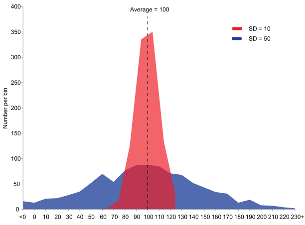

decision-making-stat
MS04-001-G
This is a Quarto book.
To learn more about Quarto books visit https://quarto.org/docs/books.
https://quarto.org/docs/books/book-structure.html: This page should include the preface, acknowledgements, etc. and headings in the index.qmd file are unnumbered by default. The HTML version of the book will use the index.qmd as the home page and if provided, will place the cover-image on that page.
The references.qmd file will include the generated bibliography (see References below for details).
The syllabus can be found here
0.1 Sets and Combinatorial Analysis
0.1.1 Set
Definitions : A set 𝐸 is a collection of objects, called its elements, considered without order or possible repetition. If ” 𝑥 is an element of the set 𝐸 “, then one can say that”𝑥 belongs to 𝐸 ” and we denote 𝑥 ∈ 𝐸 A set without element is called empty set: notation: ∅ A single-element set is called a singleton A two-element set, is called a pair A subset is a part of the set
Usual sets in mathematics : ℕ” = {0, 1, 2, 3, 4, . . .} “the set of nonnegative integers ℤ” = {…, −2, −1, 0, 1, 2, …}” the set of integers ℚ={ 𝑎/𝑏, 𝑎∈ℤ, 𝑏∈ℤ, and 𝑏≠0} the set of rational numbers (the fractions) ℝ “= ]−∞, +∞[” the set of real numbers ℝ “ ”{𝑎} the set of all the real numbers in ℝ except 𝑎 ℝ^+ “= [0, +∞[” the set of positif real numbers ℝ^− ”= ]−∞, 0]” the set of negatif real numbers
Representation of a set : By extension: give an exhaustive list of all its elements. By understanding: give a characteristic property of its elements. For example : 𝐴 = {𝑥 ∈ℕ ┤| x is an even number} by extension : 𝐴 = {0, 2, 4, 6, 8,…} 𝐵 = {𝑥 ∈ℤ | −2 ≤ 𝑥 ≤ 5} by extension : 𝐵 = {−2,−1, 0, 1, 2, 3, 4, 5}
Operations on Sets : Inclusion : 𝐴 ⊂ 𝐵 : ∀ 𝑥∈𝐴 ⇒ 𝑥∈𝐵
Equality : 𝐴 = 𝐵 ∀ 𝑥∈𝐴 ⟺𝑥∈𝐵
Note that 𝐴 ⊆ 𝐵 implies ” 𝐴 is included in 𝐵 or equal to 𝐵 “.
Recall that : 𝐴=𝐵 ⟺ 𝐴⊆𝐵 and 𝐵⊆𝐴.
Intersection : 𝐴 ∩ 𝐵 ∀ 𝑥 ∈ 𝐴 ∩ 𝐵⟺𝑥 ∈ 𝐴 and 𝑥 ∈ 𝐵.
Recall that : if 𝐴∩𝐵=∅, then one can say that 𝐴 and 𝐵 are disjoint 𝐴∩𝐵 = 𝐵∩𝐴 𝐴∩∅ = ∅ 𝐴∩(𝐵∩𝐶) = (𝐴∩𝐵)∩𝐶
Union : 𝐴∪𝐵 ∀ 𝑥 ∈𝐴∪𝐵⟺𝑥 ∈ 𝐴 or 𝑥 ∈ 𝐵.
Recall that :𝐴⊆(𝐴∪𝐵),𝐵⊆(𝐴∪𝐵),and 𝐴∩𝐵⊆(𝐴∪𝐵) 𝐴∪𝐵=𝐵∪𝐴 𝐴∪∅=𝐴 𝐴∪(𝐵∪𝐶)=(𝐴∪𝐵)∪𝐶 𝐴∩(𝐵∪𝐶)=(𝐴∩𝐵)∪(𝐴∩𝐶)
Complementarity : Let 𝐴, 𝐵 and 𝐶 be three sets, such that 𝐴 ⊂ 𝐵 and 𝐶⊂ 𝐵. The complement of 𝐴 in 𝐵 is the set of elements of 𝐵 not belonging to 𝐴. Notation : 𝐴 ̅ (or 𝐴^𝑐, or 𝐵∖𝐴).
Recall that : A ∩ 𝐴 ̅ = ∅ A ∪ 𝐴 ̅ = B ((𝐴 ̅)) ̅ = A ((𝐴∩𝐶)) ̅ = 𝐴 ̅ ∪ 𝐶 ̅ and ((𝐴 ∪ 𝐶) ) ̅ = 𝐴 ̅ ∩ 𝐶 ̅
Partition : A partition of a set 𝐸 is a set of non-empty subsets of 𝐸 (called the components of the partition) which are disjoint such that their union is equal to 𝐸.
Example : Suppose that 𝐸={1, 2, 3, 4, 5, 6, 7}. Then : 𝐸={{1, 2, 3}, {4, 5, 6, 7}} is a partition of 𝐸 ; 𝐸={{1, 2}, {3, 4}, {5, 6, 7}} is a partition of 𝐸 ; 𝐸={{1}, {2}, {3}, {4}, {5}, {6}, {7}} is a partition of 𝐸 ; …
Set of the parts: We call the set of the parts of 𝐴, the set of all the possible subsets of 𝐴. It is denoted 𝒫(𝐴).
Exemple : Suppose that 𝐴 = {1, 2, 3}. Then, we have: 𝒫(𝐴) = {∅, {1}, {2}, {3}, {1, 2}, {1, 3}, {2, 3}, {1, 2, 3}}
Cardinal of a set : The cardinal is the size of a set. The cardinal of a finite set is the number of elements of the set. In particular, the cardinal of the empty set is zero. Notation : |𝐸| (or #(𝐸), or Card(𝐸)) is the cardinal of the set 𝐸
Recall that if 𝐴⊆𝐵, then |𝐴|≤|𝐵|; if 𝐴⊆𝐵, then |𝐵|=|𝐵|−|𝐴|; if 𝐴∩𝐵=∅, then |𝐴∪𝐵|=|𝐴|+|𝐵|; |𝐴∪𝐵|=|𝐴|+|𝐵|−|𝐴∩𝐵|; if |𝐴|=𝑛, then |𝒫(𝐴)|=2^𝑛.
0.1.2 Combinatorial analysis
The purpose of combinatorial analysis (counting techniques) is to learn how to count the number of elements in a finite set.
Three techniques will be addressed: Permutations Arrangements Combinations
These techniques depend on an operation: the factorial of a nonnegative integer.
The factorial : Let 𝑛 ∈ 𝑁. Its factorial is defined by :
𝑛! = 1 × 2 × . . . × (𝑛 − 1) × 𝑛
By convention, we have 0! = 1. Main Property: Let 𝑘 be a nonnegative and non null integer (𝑘 ≥ 1) and let 𝑛 be a nonnegative and non null integer such that (𝑛−𝑘)≥0.
We have : 𝑛! = (𝑛 − 𝑘)! × (𝑛 − 𝑘 + 1) × . . . × (𝑛 − 1) × 𝑛.
Permutations : Given a set 𝐸 of 𝑛 objects, a permutations is an ordered rearrangement, without repetition of these 𝑛 distinct objects. The number of permutations of 𝑛 objects equals 𝑛!
Arrangements : Given a set 𝐸 of 𝑛 objects (elements), we call arrangements of 𝑝 (1 ≤ 𝑝 ≤ 𝑛) objects, all ordered sequences of 𝑝 objects taken from the 𝑛 objects.
There are two cases:
Arrangements without repetition : When each object can only be seen once in an arrangement, the number of non-repeating arrangements of 𝑝 objects taken from 𝑛 is: 𝐴_𝑛^𝑝= 𝑛!/((𝑛−𝑝)!) where 1≤𝑝≤𝑛.
Arrangements with repetition : When an object can be observed several times in an arrangement, the number of arrangements with repetition of 𝑝 (1 ≤ 𝑝 ≤ 𝑛) objects taken from 𝑛 is equal to 𝑛^𝑝.
Remark : The permutation of 𝑛 objects is a particular case of a non-repeating arrangement of 𝑝 objects taken from 𝑛 objects, when 𝑝 = 𝑛.
Thus, the number of permutations of 𝑛 objects equals :
𝐴_𝑛^𝑛= 𝑛!/((𝑛−𝑛)!)=𝑛!/0!=𝑛!
Combinations : Given a set 𝐸 of 𝑛 objects, we call combinations of 𝑝 (1 ≤ 𝑝 ≤ 𝑛) objects any set of 𝑝 objects taken without replacement among the 𝑛 objects. In this case, the notion of order of objects is no longer taken into account. The number of combinations of 𝑝 objects taken from 𝑛 is
𝐶_𝑛^𝑝= 𝑛!/(𝑝! × (𝑛−𝑝)!)=(𝐴_𝑛^𝑝)/𝑝!
0.1.3 exemple détaillé
How many 10-letter words can be formed with the 26 letters of the alphabet if the letters can be reused ?
At each position (1 to 10) one can chose among 26 different letters. Therefore the number of possibilities will be : 26 × 26 × 26 × 26 × 26 × 26 × 26 × 26 × 26 × 26= 2610.
How many 10-letter words can be formed with the 26 letters of the alphabet if each letter is used only once ?
The number of arrangements without repetition of 10 objects taken among 26 is equal to 𝐴_26^10 = 26!/((26 − 10)!) = 26 × 25 × 24 × 23 × 22 × 21 × 20 × 19 × 18 × 17 =19 275 223 968 000 words.
How many different numbers of 6 digits are there
If there are no restrictions? If the numbers have to be divisible by 5 ? If the repetition of digits is excluded?
The first digit cannot be 0 otherwise the number would have 5 digits
Without any restriction One gets 9 × 10 ×10 ×10 ×10 × 10 = 900 000 possible numbers
If the number ends by 0 or 5 (divisible by 5) One gets 9 × 10 × 10 × 10 × 10 × 2 = 180 000 possible numbers
If a chosen digit cannot be re-used One gets 9 × 9 × 8 × 7 × 6 × 5 = 136 080 possible numbers.
0.1.4 Exercice
A padlock has three wheels, each with the digits 0 to 9. How many secrets “numbers” are there?
From a set of 52 cards, two cards are drawn simultaneously (without replacement). In how many different ways is this possible?
The code on your laptop is made up of 4 numbers (ranging from 0 to 9 each). A criminal has observed you doing the code. He managed to see only one number (but he doesn’t remember its position). What is the (maximum) number of tries for the criminal to unlock your laptop?
The number of possibilities is equal to 10 × 10 × 10 = 103 = 1000
It corresponds to the number of different ways you can choose a pair of cards from a deck of 52 cards, that is 𝐶_52^2 =1326
First, the number of possible ways one can place the known digit is equal to 𝐶_4^1 =4 And then, the number of possibilities for the remaining three digits is equal to 10 × 10 × 10 = 103 = 1000. Thus the (maximum) number of tries is equal to 4 × 1000 = 4000.
0.1.5 Moodle extension
0.1.5.1 1
A code has five elements: three digits and two letters If the digits of the code are distinct, then the total number of possible codes is equal to : 20 x 10 x 9 x 8 x 26 x 26 10 x 10 x 9 x 8 x 26 x 26 10 x 10 x 9 x 8 x 26 x 25 10 x 9 x 8 x 7 x 26 x 26
Feedback: We multiply the number of possibilities to place the 2 letters (therefore the 3 digits) among 5 positions: 𝐶_5^2 (= 𝐶_5^3 )=10 , by the number of arrangements without repetition of 3 (distinct) digits 10x9x8 by the number of arrangements with repetition of 2 letters 26x26
0.1.5.2 2
A code has five elements: three digits and two letters If the code begins with the digit 0, then the total number of possible codes is equal to : 26 x 26 x 10 x 10 10 x 26 x 25 x 10 x 9 6 x 26 x 26 x 10 x 10 10 x 26 x 25 x 10 x 9
Feedback: If the code starts with 0, there are 2 numbers and 2 letters left to place. We multiply the number of possibilities to place the 2 letters (therefore the 2 digits) among 4 positions: 𝐶_4^2=6 , by the number of arrangements with repetition of 2 digits 10x10 by the number of arrangements with repetition of 2 letters 26x26
0.1.5.3 3
A code has five elements: three digits and two letters If the code begins with the letter A, then the total number of possible codes is equal to : 26 x 10 x 10 x 10 26 x 26 x 10 x 10 4 x 26 x 10 x 10 x 10 26 x 10 x 9 x 8
Feedback: If the code begins with A, there are 1 letter and 3 numbers left to place. We multiply the number of possibilities to place the letter (therefore the 3 digits) among 4 positions: 𝐶_41=(𝐶_43 )=4 , by the number of possible letters 26 by the number of arrangements with repetition of 3 digits 10x10x10
0.1.5.4 4
A code has five elements: three digits and two letters If the code begins with two letters, then the total number of possible codes is equal to : 26 x 25 x 10 x 9 x 8 26 x 25 x 10 x 10 x 10
26 x 26 x 10 x 10 x 10
26 x 26 x 10 x 9 x 8
Feedback: If the code begins with 2 letters, the positions of the 2 letters and the 3 digits are imposed. We just multiply the number of arrangements with repetition of 2 letters 26x26 by the number of arrangements with repetition of 3 digits 10x10x10
0.1.5.5 5
A code is made up of two digits and two letters of the alphabet in all possible orders. Thus, we can deduce that if the digits of the code are distinct, then the total number of possible codes is equal to: 10 x 9 x 26 x 26 6 x 10 x 9 x 26 x 26 12 x 10 x 9 x 26 x 26 4 x 10 x 9 x 26 x 26
Feedback: We multiply the number of possibilities to place the 2 letters (therefore the 2 digits) among 4 positions: 𝐶_4^2=6 , by the number of arrangements without repetition of 2 (distinct) digits 10x9 by the number of arrangements with repetition of 2 letters 26x26
0.1.5.6 6
A code is made up of two digits and two letters of the alphabet in all possible orders. Thus, we can deduce that if the code begins with the number 0, then the total number of possible codes is equal to: 10 x 26 x 26 2 x 10 x 26 x 26 3 x 10 x 26 x 26 4 x 10 x 26 x 26
Feedback: If the code starts with 0, there are 1 digits and 2 letters left to place. We multiply the number of possibilities to place the digit (therefore the 2 letters) among 3 positions: 𝐶_3^1 (𝐶_3^2 )=3 , by the number of possible digits: 10 by the number of arrangements with repetition of 2 letters : 26x26
0.1.5.7 7
A code is made up of two digits and two letters of the alphabet in all possible orders. Thus, we can deduce that if the code begins with the letter A, then the total number of possible codes is equal to : 26 x 10 x 10 x 2 26 x 10 x 10 x 3 26 x 10 x 10 x 4 26 x 10 x 10 x 6
Feedback: If the code begins with A, there are 1 letter and 2 numbers left to place. We multiply the number of possibilities to place the letter (therefore the 2 digits) among 3 positions: 𝐶_31=(𝐶_32 )=3 , by the number of possible letters 26 by the number of arrangements with repetition of 2 digits 10x10
0.1.5.8 8
A code is made up of two digits and two letters of the alphabet in all possible orders. Thus, we can deduce that if the code starts with two letters, then the total number of possible codes is equal to : 26 x 25 x 10 x 10
26 x 26 x 10 x 10
26 x 25 x 10 x 9
26 x 26 x 10 x 9
Feedback: If the code starts with 2 letters, the positions of the 2 letters and the 2 digits are imposed. We just multiply the number of arrangements with repetition of 2 letters 26x26 by the number of arrangements with repetition of 2 digits 10x10
0.2 Calculation of probabilities
Practical approach: Probability allows to measure the likelihood of an event. Some definitions : Random experiment: an experiment (involving chance) whose results can not be predicted with certainty Universe: the set of all possible outcomes of a random experiment, noted Ω Event: a part or subset of the universe
Probability: a number between 0 and 1 that gives a measure of the likelihood of an event. In other words, if 𝐸 is an event, then
0 ≤ ℙ(𝐸) ≤ 1 Special cases of events: Certain event: it can be described with all the elements of Ω and in that case its probability is 1 Impossible event: there exist no element of Ω which can describe it and in that case its probability is 0
Properties and basic operations:
Inclusion : 𝐴 ⊂ 𝐵 ⇒ ℙ(𝐴) ≤ ℙ(𝐵) Intersection : ℙ(𝐴 ∩ 𝐵) ≤ ℙ(𝐵) and ℙ(𝐴 ∩ 𝐵) ≤ ℙ(𝐴) If ℙ(𝐴 ∩ 𝐵) = ℙ(𝐴) × ℙ(𝐵), then 𝐴 and 𝐵 are two independent events If 𝐴 and 𝐵 are disjoint (i.e. 𝐴 ∩ 𝐵 = ∅ ), then ℙ(𝐴 ∩ 𝐵) = 0
Union : ℙ (𝐴)≤ℙ(𝐴∪𝐵), ℙ(𝐵) ≤ ℙ(𝐴∪𝐵) and ℙ(𝐴∩𝐵) ≤ ℙ(𝐴∪𝐵) ℙ(𝐴 ∪ 𝐵)= ℙ(𝐴)+ ℙ(𝐵)− ℙ(𝐴 ∩ 𝐵) Therefore, if 𝐴 and 𝐵 are two disjoint events, then ℙ(𝐴 ∪ 𝐵) = ℙ(𝐴) + ℙ(𝐵) The difference : (𝐴∖𝐵) ⊂ 𝐴 ⇒ ℙ(𝐴∖𝐵) ≤ ℙ(𝐴) ℙ(𝐴∖𝐵) = ℙ(𝐴) − ℙ(𝐴 ∩ 𝐵) If 𝐴 and 𝐵 are two disjoint events, then (𝐴∖𝐵) = 𝐴. Therefore, one gets ℙ(𝐴∖𝐵) = ℙ(𝐴).
Complementarity : The complement of the event 𝐴 is an event (denoted 𝐴 ̅ or Ω∖𝐴) that contains all elements of Ω not belonging to 𝐴
\[P(\overline{A}) = 1 - P(A)\]
Equiprobability
Assume that the universe \(\Omega\) of a random experiment is a finite set. We talk of equiprobability when all the possible outcomes of the experiment have the same probability (of realization). Let \(A\) be an event associated with this experiment. In that case, we have:
\[P(𝐴) = \frac{\text{Number of favorable cases}}{\text{Number of possible cases}}\]
The conditional probability
Let \(A\) and \(B\), two events from the same universe \(\Omega\). Suppose that \(A\) is a non-zero probability event. We call conditional probability of \(B\) such \(A\) (or knowing that \(A\) is realized) the quantity defined as follows:
\[P(B \vert A) = \frac{P(A \cap B)}{P(A)}\]
In the same way, the conditional probability of \(A\) such \(B\) (or knowing that \(B\) is realized) is defined by:
\[P(A \vert B) = \frac{P(A \cap B)}{P(B)}\]
If \(A\) and \(B\) are two independent events, then:
\[P(A \vert B) = P(𝐴)\]
\[P(B \vert A) = P(B)\]
Total Probability Formula:
Let \(\{𝐸1, ..., 𝐸_𝑘\}\) be a partition of \(\Omega\) (such that 𝐸_𝑖 ≠ ∅ for all 𝑖 = 1,…,𝑘) Let 𝐵 be an event. We have :
“ℙ” (𝐵)= ∑_(𝑖=1)^𝑘▒“ℙ” (𝐵∩𝐸_𝑖 )
=∑_(𝑖=1)^𝑘▒〖"ℙ" (𝐸_𝑖 )" ℙ" (𝐵 ┤| 𝐸_𝑖)〗0.3 Sets and Combinatorial Analysis
0.3.1 Definition
A set is the mathematical model for a collection of different and distinct things / objects ; a set contains elements or members, which can be mathematical objects of any kind: numbers, symbols, points in space, lines, other geometrical shapes, variables, or even other sets. The set with no elements is the empty set; a set with a single element is a singleton. A set may have a finite number of elements or be an infinite set.
Definitions : A set 𝐸 is a collection of objects, called its elements, considered without order or possible repetition (parce que ce sont des objets). If ” 𝑥 is an element of the set 𝐸 “, then one can say that”𝑥 belongs to 𝐸 ” and we denote 𝑥 ∈ 𝐸 A set without element is called empty set: notation: ∅ A single-element set is called a singleton A two-element set, is called a pair A subset is a part of the set
0.3.2 How to represent a set
Representation of a set : By extension: give an exhaustive list of all its elements. By understanding: give a characteristic property of its elements. For example : 𝐴 = {𝑥 ∈ℕ ┤| x is an even number} by extension : 𝐴 = {0, 2, 4, 6, 8,…} 𝐵 = {𝑥 ∈ℤ | −2 ≤ 𝑥 ≤ 5} by extension : 𝐵 = {−2,−1, 0, 1, 2, 3, 4, 5}
0.3.3 Usual sets in mathematics
Usual sets in mathematics : ℕ” = {0, 1, 2, 3, 4, . . .} “the set of nonnegative integers ℤ” = {…, −2, −1, 0, 1, 2, …}” the set of integers ℚ={ 𝑎/𝑏, 𝑎∈ℤ, 𝑏∈ℤ, and 𝑏≠0} the set of rational numbers (the fractions) ℝ “= ]−∞, +∞[” the set of real numbers ℝ “ ”{𝑎} the set of all the real numbers in ℝ except 𝑎 ℝ^+ “= [0, +∞[” the set of positif real numbers ℝ^− ”= ]−∞, 0]” the set of negatif real numbers
0.3.4 Operations on sets
Operations on Sets :
0.3.4.1 Inclusion : 𝐴 ⊂ 𝐵 :
∀ 𝑥∈𝐴 ⇒ 𝑥∈𝐵
0.3.4.2 Equality : 𝐴 = 𝐵
∀ 𝑥∈𝐴 ⟺𝑥∈𝐵
Note that 𝐴 ⊆ 𝐵 implies ” 𝐴 is included in 𝐵 or equal to 𝐵 “.
Recall that : 𝐴=𝐵 ⟺ 𝐴⊆𝐵 and 𝐵⊆𝐴.
0.3.4.3 Intersection : 𝐴 ∩ 𝐵
∀ 𝑥 ∈ 𝐴 ∩ 𝐵⟺𝑥 ∈ 𝐴 and 𝑥 ∈ 𝐵.
Recall that : if 𝐴∩𝐵=∅, then one can say that 𝐴 and 𝐵 are disjoint 𝐴∩𝐵 = 𝐵∩𝐴 𝐴∩∅ = ∅ 𝐴∩(𝐵∩𝐶) = (𝐴∩𝐵)∩𝐶
0.3.4.4 Union : 𝐴∪𝐵
∀ 𝑥 ∈𝐴∪𝐵⟺𝑥 ∈ 𝐴 or 𝑥 ∈ 𝐵.
Recall that :𝐴⊆(𝐴∪𝐵),𝐵⊆(𝐴∪𝐵),and 𝐴∩𝐵⊆(𝐴∪𝐵) 𝐴∪𝐵=𝐵∪𝐴 𝐴∪∅=𝐴 𝐴∪(𝐵∪𝐶)=(𝐴∪𝐵)∪𝐶 𝐴∩(𝐵∪𝐶)=(𝐴∩𝐵)∪(𝐴∩𝐶)
0.3.4.5 Complementarity : Let 𝐴, 𝐵 and 𝐶 be three sets, such that 𝐴 ⊂ 𝐵 and 𝐶⊂ 𝐵. The complement of 𝐴 in 𝐵 is the set of elements of 𝐵 not belonging to 𝐴.
Notation : 𝐴 ̅ (or 𝐴^𝑐, or 𝐵∖𝐴). Recall that : A ∩ 𝐴 ̅ = ∅ A ∪ 𝐴 ̅ = B ((𝐴 ̅)) ̅ = A ((𝐴∩𝐶)) ̅ = 𝐴 ̅ ∪ 𝐶 ̅ and ((𝐴 ∪ 𝐶) ) ̅ = 𝐴 ̅ ∩ 𝐶 ̅
🏁🏁
0.4 Calculation of probabilities
🏁🏁
0.5 Discrete random variable
After performing a random experiment, we are often interested in the function of the result obtained. For example, when we roll two balanced dice (fair dice) with two different colors, we may want to know the sum of the two numbers from the experiment. These magnitudes (or functions) of interest are values called random variables.
A random variable \(X\) is a function defined from the set of possible results of a random experiment \(\Omega\) and with values in \(\mathbb{R}\) or a part of \(\mathbb{R}\).
\[\begin{align} X : \Omega &\to \mathbb{R} \\ \omega &\to X(\omega) \end{align}\]
It must be possible to determine the probability that it takes a given value or a given set of values. We denote by \(X( \Omega)\) the set of all the values that \(X\) can take.
0.5.1 Discrete or continuous random variable
Discrete random variables can only take on a finite number of values. In another words, a random variable \(X\) is called discrete if \(X(\Omega)\) is a finite or countable set. For example:
- number of heads appearing after ten throws of a coin,
- number of vehicles passing an intersection in a day,
- number of customers entering a store on Saturday.
Continuous random variables, on the other hand, can take on any value in a given interval. For example, the mass of an animal would be a continuous random variable, as it could theoretically be any non-negative number.
Let \(X\) be a discrete random variable. The law, also called distribution of \(X\) is the list of probabilities attributed to each of its possible values. Explicitly, for any \(x \in X(\Omega)\), we associate a value between \(0\) and \(1\) corresponding to the probability that the event \(X = x\) is realized and noted \(P(X = x)\).
Remark: Suppose \(X(\Omega) = \{x_1, x_2, ..., x_n\}\). Therefore:
\[P( X = x_1) + ... + P(X = x_n) = \sum_{\substack{x \in X(\Omega)}} P(X = x) = 1\]
0.5.2 Expected value (mean) of a discrete random variable
We can calculate the expected value (or mean) of a discrete random variable as the weighted average of all the outcomes of that random variable based on their probabilities. We interpret expected value as the predicted average outcome if we looked at that random variable over an infinite number of trials. In mathematicals writing, we can say:
Let \(X\) be a discrete random variable. Suppose that \(X(\Omega) = \{x_1, x_2, ..., x_n\}\). We denote \(p_i = P(X = x_i)\), for all \(i \in \{1, ..., n\}\).
The expectation of \(X\) is defined by:
\[E(X) = \frac{x_1 \times P(X = x_1) + ... + x_n \times P(X = x_n)}{P(X = x_1) + ... + P(X = x_n)}\]
\[E(X) = \frac{\sum_{i = 1}^n x_i \times p_i}{\sum_{i = 1}^n p_i} = \frac{\sum_{i = 1}^n x_i \times p_i}{1} = \sum_{i = 1}^n x_i \times p_i\]
The expectation \(E(X)\) is also called the first-order moment of \(X\).
0.5.3 Variance and standard deviation
The variance of a discrete random variable is defined by:
\[V(X) = E(X^2) - (E(X))^2\]
Standard deviation measures the dispersion of a distribution around the expectation. In a way, the standard deviation evaluates the “average width” of the distribution, so it is expressed in the same unit as the variable. A low value of the standard deviation, implies that the distribution is homogeneous around the expectation. In other words, a smaller value of the standard deviation, implies the distribution values are close to each other and to the expectation. On the other hand, a larger value of the standard deviation, implies that the distribution is spread out: the distribution values are distant from each other and from the expectation. The standard deviation is the square root of the variance:
\[\sigma(X) = \sqrt{V(X)}\]
𝜎(𝑋) = √(𝕍(𝑋) )⟺𝕍(𝑋) = (𝜎(𝑋))^2
Example of samples from two populations with the same mean but different variances. The red population has mean 100 and variance 100 (Standard Deviation = 10) while the blue population has mean 100 and variance 2500 (Standard Deviation = 50).

0.5.4 Coefficiant of variation
- https://en.wikipedia.org/wiki/Coefficient_of_variation
The coefficient of variation of a random variable is defined by
\[CV(X) = \frac{\sigma(X)}{E(X)} \times 100\]
This percentage is also an indicator of the dispersion around the expectation. By convention, we have:
- \(CV(X) < 15\%\) implies that the distribution is homogeneous around the expectation,
- \(CV(X) \geq 15\%\) implies that the distribution is heterogeneous around the expectation.
0.5.5 Cumulative Distribution Function (CDF)
The cumulative distribution function is a function defined on \(\R\) and with values in \([0,1]\), denoted by \(F_X\). For all \(x \in \R\).
\[F_X(x) = P(X \leq x) = \sum \limits_{j \in X(\Omega), \text{ such that } j \leq x} P(X = j)\]
Remarks:
- The cumulative distribution function is increasing,
- The cumulative distribution function is a step function,
- The set of points of discontinuity is \(X(\Omega)\)
0.5.6 Special class of random variable
Bernouilli Trial Bernoulli’s test Bernoulli’s test is any test with only two possible outcomes: Success and Failure. If 𝑋 is a real random variable counting the number of successes in a Bernoulli’s test, then we have the following two cases: [𝑋 = 1] is the event which correspond to Success : with a associated probability 0 ≤ 𝑝 ≤ 1 [𝑋 = 0] is the event which correspond to Failure : with a associated probability 𝑞 = 1 − 𝑝. We say that 𝑋 follows a law of Bernoulli with parameter 𝑝 that we denote 𝑋 ∼ ℬ(𝑝). We have 𝑋(Ω)={0, 1}. Moreover, 𝔼(𝑋)=𝑝 and 𝕍(𝑋)=𝑝𝑞 where 𝑞=1−𝑝. => faire une expérience en classe pour démontrer : https://en.wikipedia.org/wiki/Bernoulli_trial
The Binomial law The random variable 𝑋= “total number of successes” after 𝑛 independent repetitions of a Bernoulli test, is called a Binomial random variable of parameters (𝑛, 𝑝) and is denoted : 𝑋∼ℬ(𝑛, 𝑝).
By definition, 𝑋 (Ω) = {0, 1, . . . , 𝑛}. The expression of the ℬ(𝑛, 𝑝) law is given by : 𝑝_𝑘 =ℙ(𝑋=𝑘)=𝐶_𝑛^𝑘 𝑝^𝑘 (1−𝑝)^(𝑛−𝑘), ∀ 𝑘∈𝑋(Ω), with 𝐶_𝑛^𝑘= 𝑛!/(𝑘!(𝑛−𝑘)!) By definition, 𝑋 = ∑2_(𝑖=1)^𝑛▒𝑋_𝑖 , where the 𝑋_𝑖 follow a Bernoulli ditribution with parameter 𝑝. The expectation of the Binomial distribution equals 𝔼(𝑋) = 𝑛𝑝 and its variance is equal to 𝕍(𝑋) = 𝑛𝑝𝑞, where 𝑞=1−𝑝
The Poisson law Let 𝜆>0 be a fixed parameter. We say that the random variable 𝑋 with values in ℕ follows a Poisson law of parameter 𝜆 (denoted by 𝑋∼𝒫𝑜(𝜆)), if 𝑝_𝑘 =ℙ(𝑋=𝑘)=𝑒^(−𝜆) 𝜆^𝑘/𝑘!, ∀ 𝑘∈ℕ, Note that : 𝔼(𝑋) =𝕍(𝑋) = 𝜆.
The Poisson law can be seen as an approximation of the Binomial law when 𝑛 is “large” and 𝑝 is “small” (rare success).
Geometric law The random variable 𝑋 which gives the rank of the first success (following the independent repetition of a Bernoulli’s test, having as probability of success 𝑝) is called Geometric random variable of parameter 𝑝 (denoted 𝑋 ~ 𝐺(𝑝)). By definition, 𝑋(Ω) =ℕ∖{0}. The expression of the 𝐺(𝑝) law is given by 𝑝_𝑘 =ℙ(𝑋=𝑘)=𝑝(1−𝑝)^(𝑘−1), ∀ 𝑘∈𝑋(Ω), We have : 𝔼(𝑋)=1/𝑝 𝕍(𝑋)=(1−𝑝)/𝑝^2
𝐹_𝑋 (𝑘)=ℙ(𝑋 ≤𝑘)=1−(1−𝑝)^𝑘
The geometric law is often interpreted as being the lifetime or the date of death (discrete)
Linear transformation Let 𝑋 be a discrete random variable. Let 𝑎 and 𝑏 be two real values. We set 𝑌 = 𝑎𝑋+𝑏. We have : 𝔼 (𝑌 ) = 𝑎 (𝔼(𝑋)) + 𝑏. 𝕍 (𝑌 ) = 𝑎^2 (𝕍(𝑋)). If 𝑎 > 0, then 𝜎(𝑌 ) = 𝑎𝜎(𝑋) If 𝑎 < 0, then 𝜎(𝑌 ) = (−𝑎)𝜎(𝑋)
Binomial - Poisson Approximation :
Let 𝑋 ~ ℬ(𝑛, 𝑝)
If 𝑛 is large enough (≥ 30) and 𝑝 is low (≤ 0.1) such that 𝑛𝑝 < 15, then we can approach the Binomial law by the Poisson law of parameter 𝜆 = 𝑛𝑝, i.e. ℙ(𝑋=𝑘)≈𝑒^(−𝜆) 𝜆^𝑘/𝑘!
— detailed examples
Let the binomial law : 𝑋 ~ ℬ(100, 0.09) 𝑛=100 et 𝑝=0,09 What is the value of the probability ℙ (𝑋 ≤ 5) ? What is the estimate obtained for this probability using the Poisson distribution approximation?
Let the binomial law : 𝑋 ~ ℬ(100, 0.09) 𝑛=100 et 𝑝=0,09 We have: ℙ (𝑋 ≤ 5)= 0.1045 ℙ (X ≤ 5)=” ” ∑2_(𝑘=0)4▒〖𝐶_𝑛𝑘 𝑝^𝑘 (1−𝑝)^(𝑛−𝑘) 〗 = ℙ(X=0)+ ℙ(X=1) + ℙ(X=2) + ℙ(X=3) + ℙ (X=4) + ℙ (X=5) = 0,000080193512+ 0,000793122644 + 0,003882814701 + 0,012544478265 + 0,030086070125 + 0,057130471622 = 0.1045 Approximation by the poisson law (with parameter 𝜆 = 𝑛𝑝=100×0,09) that is 𝑌 ~ 𝒫𝑜(9)” hence ” ℙ(𝑋≤5)≈ℙ(𝑌≤5)= 0.1157 ℙ (Y ≤ 5)=∑2_(𝑘=0)4▒〖𝑒(−𝜆) 𝜆^𝑘/𝑘!〗 = 0,000123409804+ 0,001110688237+ 0,004998097066+ 0,014994291197+ 0,033737155192+ 0,060726879346 = 0.1157
— Application exercices
A game of chance involves rolling a balanced 6-sided dice. The thrower gains the double of the result obtained if it is even, otherwise, he loses the double of the result obtained. Let 𝑋 be the random variable that represents a player’s winnings.
1 Determine the law of 𝑋 2 Calculate 𝔼(𝑋), 𝕍(𝑋) and 𝜎_𝑋 3 Plot the cumulative distribution function of 𝑋
𝔼(𝑋)=∑_(𝑥∈𝑋(Ω))▒〖(𝑥 ×ℙ(𝑋 =𝑥))=1〗
𝕍(𝑋)=∑_(𝑥∈𝑋(Ω))▒〖(𝑥^2 ×ℙ(𝑋 =𝑥))−(𝔼(𝑋))^2= 364/6〗−1^2=358/6
𝜎_𝑋 = √(𝕍(𝑋) ) = √(358/6)=7.72442
Cumulative distribution function 𝐹_𝑋 : if 𝑥<−10, then 𝐹_𝑋 (𝑥)=0 ; if −10≤𝑥<−6, then 𝐹_𝑋 (𝑥)=ℙ(𝑋=−10)=1/6 ; if −6≤𝑥<−2, then 𝐹_𝑋 (𝑥)=ℙ(𝑋=−10)+ℙ(𝑋=−6)=2/6; if −2≤𝑥<4, then 𝐹_𝑋 (𝑥)=ℙ(𝑋 =−10)+ℙ(𝑋 =−6)+ℙ(𝑋 =−2)= 3/6; if 4≤𝑥<8, then 𝐹_𝑋 (𝑥) =ℙ(𝑋 = −10)+ℙ(𝑋 = −6)+ℙ(𝑋 = −2)+ℙ(𝑋 = 4) =4/6; if 8≤𝑥<12, then〖 𝐹〗_𝑋 (𝑥)=ℙ(𝑋=−10)+ℙ(𝑋=−6)+ℙ(𝑋= −2)+ℙ(𝑋=4)+ℙ(𝑋=8)=5/6 ; if 𝑥≥12, then〖 𝐹〗_𝑋 (𝑥)=ℙ(𝑋=−10)+ℙ(𝑋=−6)+ℙ(𝑋= −2)+ℙ(𝑋 =4)+ℙ(𝑋 =8)+ℙ(𝑋 =12)= 6/6 =1.
🏁🏁